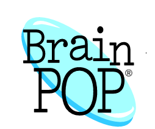

My Contribution to my Profession
I am a big fan of short animated videos as an introduction to my lessons. I find it grabs, and focuses the students’ attention for what they are about to learn. They make good ice breakers and helps get students talking about the topic, and shows me what they already know about the subject. Here are a few of my favorite websites for just such engagement.

I have been a big fan of BrainPOP for years. I used it with my own children long before becoming a teacher. In classrooms, on mobile devices, and at home, BrainPOP engages students through animated movies, learning games, interactive quizzes, primary source activities, concept mapping, and more. In class, I play the videos and the kids love the relationship between Moby the Robot and Tim the narrator. I use the quizzes as a review of the material taught online and in-person and as a means of assessing mastery.
Khan Academy offers practice exercises, instructional videos, and a personalized learning dashboard that empower learners to study at their own pace in and outside of the classroom. Our parent company imbeds many of the Khan Academy Videos inside their lessons. I use them to help reinforce more difficult concepts, before, during, or after a lesson.
I discovered this website about 5 years ago when it was still a free site. I was very impressed with their video lessons. I was using them to help with my own pedagogy. They have educational programs for students and teachers alike, and you can still get a shorter version of their video lessons to play in classroom for free. I use them in a similsr mammer as I do the BrinPOP videos. The difference is they offer a wider range of topics and their videos reach a higher grade level than BrainPOP. This has been very helpful now that I am teaching middle school.